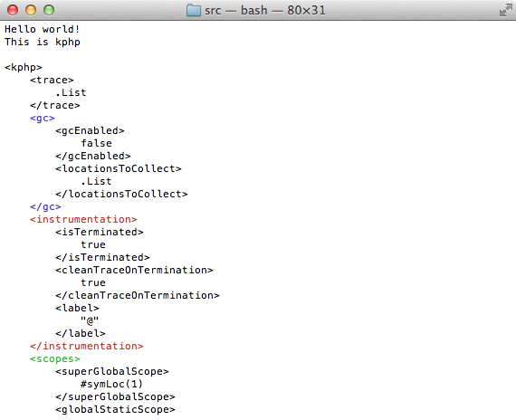
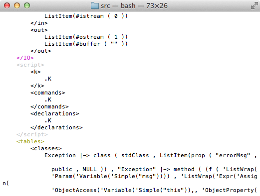
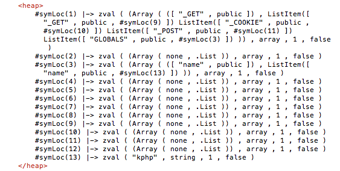
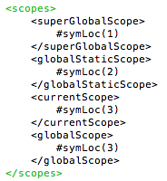
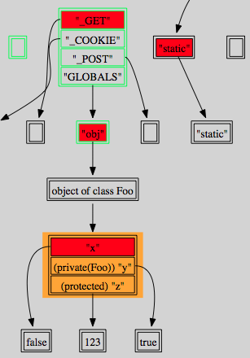
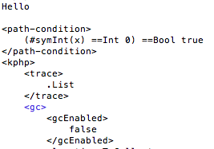

The K framework comes as a bundle of tools. The most important of them are
kompile and krun .
kompile takes a k definition as input and
compiles it into a Maude specification.
krun is then invoked in order to "run" the definition, by providing
as input the program to be run, the parser to be used, and many additional
parameters depending on the particular use (which may include an LTL
formula to be model checked, the content of a given cell, a path condition
for symbolic execution and so on).
krun can be used in so many scenarios, its usage tends to
become verbose.
For this reason, we are planning to provide wrappers for the most common use-cases.
At the moment we only provide the kphp command, which provide
a shortcut for simply running a script. The idea is that a PHP script can be
executed on the command line by writing
kphp myScript.php
For all other cases (model checking and symbolic execution) we use the K
toolchain directly.
Preliminary note: All the example commands shown here and in the comments in the examples
are meant to be executed in the kphp source folder.
The simplest scenario consists in running PHP code with the KPHP interpreter.
kompile php.k
kphp command:
scripts/kphp helloworld.php
Hello world!
This is kphp
In order to show the final configuration
(i.e. the final state) use the
--config option:
scripts/kphp helloworld.php --config
The output, which consists of the program output followed
by the configuration in XML-like notationm, should look like this
(note that configurations are verbose and span over multiple pages.
We give some details in the next subsection).

Configurations give a complete representation of the state, by displaying the contents of all the cells.
While all the cells are of course needed for the semantics, inspecting
some, in practice, is done much more often than others.
In particular, there are two cells we find very important: the
k cell, containing the fragment of program to be
executed next, and the heap cell, containing...
Yes, the heap.
In normal conditions, the k cell should be empty at
the end of the execution. This means that the code didn't get stuck
(note that .K means "empty").

Some other times, however, the program may get stuck
(either for a bug in the semantics or because the construct that
is at the top of the k cell doesn't have a semantics yet).
This is easily detected by manually inspecting the k
cell.
Another important cell is the heap cell, which
represent the content of the memory, including the values of all
variables, array members, objects etc.

Note that, in KPHP, the heap not only contains the values of the
variables, but also the scopes (or symbol tables) which are represented
as normal arrays (from whose, in principle, are indistinguishable).
For example, in the previous screenshot, the memory cell marked
#symLoc(1) contains (a subset of) the superglobals,
while the cell marked #symLoc(3) contains the global
variables (in the example program, there was one global variable called
$name .
Following the same principle, when calling a function or a method a
new local scope is created (as an array) and stored somewhere in the heap.
The scopes cell stores, at any time, the locations of
the scopes. In particular, the currentScope
is initially equal to the global scope but is updated to
when entering a function body.

We provide a small tool, HeapPP , to pretty print configurations. It takes an
XML file containing a configuration as input, and outputs a
GraphViz (*.gv) file with the same name, containing a pretty-print
representation of the relevant part of the configuration
(i.e. we currently show only the heap plus defined functions and classses).
The utility can be found in the heap-pretty-print folder under
the main KPHP source folder.
Please refere to the README file there for instructions.
To give an idea of what's the output looks like, here is a (cropped) screenshot (as configurations tends to be very verbose, this diagrams tends to be too).

NOTE: there is currently an issue with the K tools which
causes an exception to be thrown when checking a false LTL property on a program
which prints some output on stdout .
As a temporary solution, it is necessary to disable printing on stdout .
This is simply done as follow:
configuration.k file stream="stdout" which is inside
the "out" cell.
stdout (note that the output of the
program will still be present in the out cell, which can be manually
inspected in case of necessity.
Decomment the string again to restore normal output.
In general, here are the steps to be taken to enable LTL model checking:
the semantics must be compiled with a
--transition option followed by
one or more tags, specifying the set of rules we
wish to consider transitions.
For most immediate uses, we found it pratical to
use the set of rules marked with the
[step] tag as the set of transitions
(and so does our examples from the paper):
kompile php.k --transition="step"
However, any number of tags can be used,
each combination of tags identifying a different
set of transition rules and consequently
a different notion of observable program state.
For example, the command
kompile php.k --transition="step internal"
will tell the compiler to also consider
[internal] rules as transitions.
krun with an LTL formula as aditional input:
krun --parser="java -jar parser/parser.jar" examples/hello-world-ltl.php --ltlmc="LtlTrue"
Alternatively, it is also possible to write the same LTL formula in a file:
krun --parser="java -jar parser/parser.jar" examples/hello-world-ltl.php --ltlmc helloLTL.txt
The output of this simple example should be True
In general, the outcome can be:
True , meaning that the property holds
Symbolic execution must be explicitly enabled via the
kompile command:
kompile php.k --backend symbolic
It is possible to specify (similarly as when compiling with
--transition ) which rules we want to "augment" for
symbolic executions, by using the
--symbolic-rules command. By default (i.e. if the
option is not specified) all rules are compiled for symbolic
execution.
After the semantics have been compiled for symbolic execution, it is
possible to execute programs symbolically via the krun
command. In addition to the program to be run and the parser, we
also have to provide
-cPC=[PATH CONDITION]
some symbolic input: this is done by manually putting some (possibly)
symbolic values into the input buffer (i.e. the IN cell):
-cIN="ListItem([VALUE 1]) ... ListItem([VALUE n])".
Also, it is also important to make sure that the input programs
actually makes use of this symbolic data.
For this purpose, we define an utility command called
user_input() which can be used to simulate
arbitrary input; it works by reading the first item in the input
buffer and returning it. E.g:
$input = user_input(); // simulates arbitrary input
krun --parser="java -jar parser/parser.jar" -cPC="true"
-cIN='ListItem(#symInt(x))' examples/hello-world-symbolic.php
This should produce the program output, " hello ",
following by the confuguration augmented with a PC
cell containing the path condition:

Note that when more than one path conditions are possible,
an arbitrary one is chosen unless...
--search option
krun --parser="java -jar parser/parser.jar" -cPC="true"
-cIN='ListItem(#symInt(x))' --search examples/hello-world-symbolic.php
The output should be similar to the previous one, except
for the fact that two final states will be displayed
(i.e. one for $x == 0 and one for its
negation)